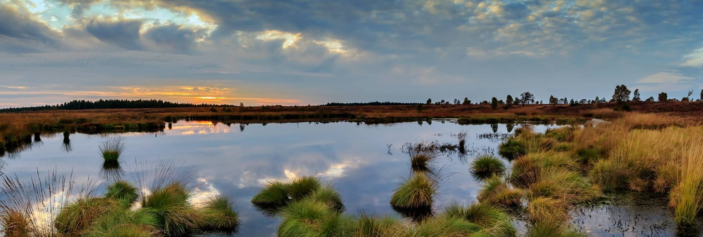

2 Introducción

Uno de los grandes problemas de actualmente en el mundo es la degradación de sistemas naturales, como los bosques y matorrales mediterráneos y humedales, los que en muchos casos contienen especies vegetales de especial interés por su endemismo, y alto nivel de amenaza y presión antrópica (Araya-López et al. 2018), (Fassnacht et al. 2021), las que pueden causar cambios en el hábitat, los cuales pueden llevar a la extinción de especies, así como a la reducción de la biodiversidad. Por lo anterior se hace necesario monitorear las áreas naturales protegidas en el país.
En Chile, la Superintendencia del Medio Ambiente (SMA) es el principal órgano estatal encargado de velar por el cumplimiento de la normativa ambiental. En sus 8 años de vida ha tenido el gran desafío de fiscalizar más de 17.887 unidades a lo largo del país que tienen al menos una normativa ambiental que los regula. Sin embargo, la institución no cuenta con la infraestructura o los recursos necesarios para fiscalizar adecuadamente todas estas unidades. Para que el rol fiscalizador de la SMA sea eficaz y continuo en el tiempo, se requiere de una infraestructura de monitoreo de gran escala a nivel país.
Entonces, se hace necesario contar con insumos satelitales de fuentes abiertas y cuyo análisis se automatizado.
La creciente disponibilidad de productos satelitales y los avances tecnológicos han fomentado una nueva era de observación de la tierra y monitoreo de los recursos naturales por parte de los gobiernos, creando nuevas oportunidades y desafíos que deben ser abordados. Debido a esta motivación, surge la necesidad de crear un sistema monitoreo satelital, que permita identificar cambios en la estructura de la vegetación en humedales urbanos, turberas de Chiloé y el bosque y matorral esclerófilo de la región Metropolitana para ayudar a su preservación.
La utilización de metodologías de análisis de imágenes satelitales para detectar cambios en ecosistemas naturales se ha hecho más común debido al acceso de fuentes abiertas de productos satelitales, y la capacidad de procesamiento computacional. La aplicabilidad de productos satelitales en detección de cambios en el tiempo, destaca el satélite Sentinel-1 de tipo SAR, tiene la ventaja de operar en longitudes de onda que no se ven obstaculizadas por la nubosidad, y puede adquirir datos sobre un lugar durante el día o la noche en todas las condiciones meteorológicas (Wang et al. 2022). Lo anterior lo hace idóneo para la detección de cambios en el territorio, como lo son ecosistemas de turberas, bosques esclerófilos y humedales urbanos, los cuales se ubican en diferentes zonas del país con diversas condiciones climáticas y topográficas.
Al trabajar con imágenes SAR presentan dos tipos de dificultades para las tarea de detección de cambios, que son el ruido de moteado (speckle noise) y la deformación en los extremos, lo que se puede solucionar con un post procesamiento (Gao et al. 2021) o en su defecto evaluar diferentes técnicas que permitan reducir el efecto de estas dificultados.
Los investigadores han dedicado grandes esfuerzos a proponer métodos robustos de detección de cambios. Estos métodos pueden clasificarse a grandes rasgos en dos corrientes principales: 1) métodos supervisados y 2) métodos no supervisados. Un método supervisado requiere un conocimiento previo sobre los tipos de cobertura del suelo o un gran número de muestras etiquetadas de alta calidad (Volpi et al. 2013, wang2022). Para el caso del proyecto SAMSARA y en específico en la primera etapa se necesita que sea un método , ya que el método constantemente necesita estar capturando información satelital y comparándola con registros históricos, proceso que debe ser eficiente computacionalmente y sin supervisión experta.
Para cumplir con lo anterior, en esta tesis se propone la utilización de una red neuronal convolucional del tipo no supervisada, pueda obtener información que permita información relevante y útil de la imágenes satelitales, que facilite el proceso de detección diferencias, a una escala territorial variable de acuerdo a las carctersticas territoriales de los ecosistemas a monitorear.